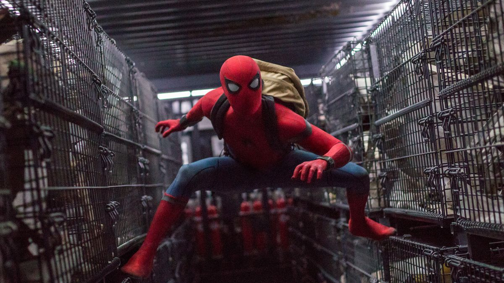
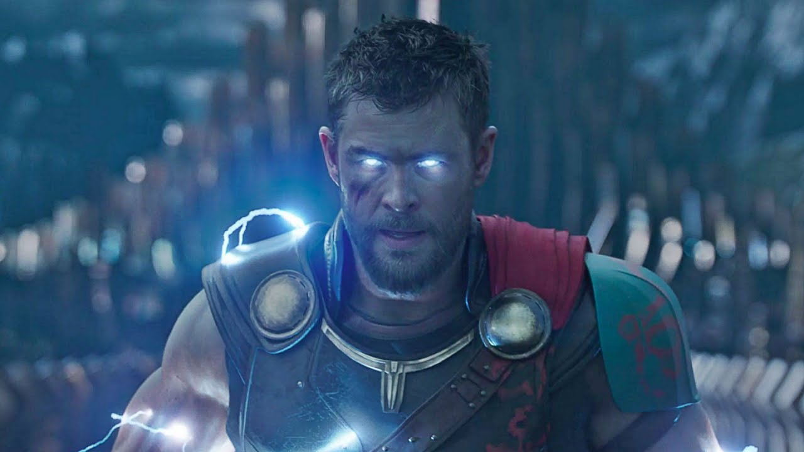

My Top Five Favorites of the MCU
Here is a list of my favorite movies of the MCU. This list is in no particular order and these are my personal opinions. I picked the movies that I always feel the most entertained by or had the biggest impact on me as a viewer. It was very hard to narrow down the nineteen movies to just a top five because I realized just how many movies I enjoyed. Some of my honorable mentions that didn't quite make it onto the list are GUardians of the Galaxy, Captain America: Civil War, and Avengers: Infinity War.
Spider-man: Homecoming
Controversial opinion: this is the best Spider-Man movie. There I said it. People will probably come after me for saying that, given the popularity of the first two Spider-Man movies, but Tobey Maguire just isn’t my favorite Peter Parker. Homecoming gave us a new take on the character without giving us and origin story, refreshing since the franchise has already been rebooted once before. Tom Holland gives a great performance as a truly teenage Peter Parker and is my favorite of the three actors to portray the webslinger. The father-son dynamic between Peter and Tony Stark is fun to watch and Michael Keaton’s Vulture is a compelling villain. One scene, however, made this movie stand out and that was the scene where Spider-Man is trapped under rubble. It is one of my favorite moments in a superhero movie and really made this particular one stand out.
The Avengers

The first Avengers movie will always have a place in my heart. It’s where it all started for building a connected universe and an epic team of heroes. I am always able to rewatch this movie and still be entertained every time. The action is good, it moves at a good pace, has great character moments, and who can forget the schwarma scene? The movie is fun and introduces us to a team of heroes we could never forget.
Black Panther

I’m not super original by putting this movie in my top five list, but that is only because it definitely deserves to be there. First we have a great cast of characters, including some amazing women who sometimes shine a little more brightly than their male counterpart. Shuri, the younger sister of T’Challa the king of Wakanda and genius behind the technology of Wakanda, steals the show while on screen having some of the funniest moments of the film. Black Panther is also a standout for the MCU with Michael B Jordan’s Killmonger, who is one of the best movie villains in a long time and perfectly provides Chadwick Boseman’s T’Challa a compelling adversary. The characters are great, the music is phenomenal, and it also tells a very thoughtful story about race relations, power, and change, all of which make Black Panther part of my top five.
Thor Ragnarok
Ragnarok is just a lot of fun and that is pretty much it, but that’s not a bad thing. After the underwhelming experience of The Dark World, Thor was in need of something different and Ragnarok delivered. For the most part Thor has been a very serious character in the MCU and had a pretty bland personality, but from the opening scene of Ragnarok things were going to be different. Chris Hemsworth showed his comedic chops and it worked for this lighthearted blockbuster. The “he’s a friend from work” and “get help” are two of the funniest scenes in the MCU, helping to put this movie on my list. Not only is it funny, but we get one of the most epic entrances of any superhero ever.
Captain America: The Winter Soldier

Almost everyone can agree, Captain America: The Winter Soldier is incredible. The film gives us a huge shift for both the character of Captain America and the MCU as a whole, tearing apart SHIELD and the world that Steve Rogers has come to know. Cap’s pairing with Black Widow is great and shows an interesting dynamic between two people who have seen authority in very different ways. There are emotional moments that land (“I’m with you until the end of the line”) as well as some of the best action sequences in any of the MCU films (that elevator scene is one of the best fight scenes ever). The Winter Soldier set the bar for the MCU that every subsequent movie has been striving to reach.